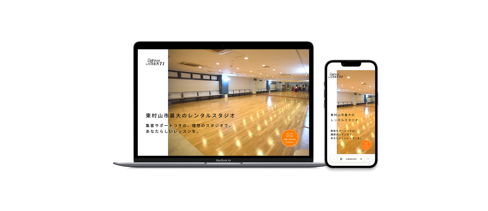

スタジオアヴァンティ
新規開校を目指す先生向けに設計したレンタルスタジオLP。
認知拡大とお問い合わせ増加を目的に導線を最適化し、
公開後も数値を確認しながら改善を継続しています。

- ターゲット
- 新規スクール開校を検討中で
レンタルスタジオを探している先生 - 制作目的
- スタジオの認知拡大
お問い合わせ数向上 - 担当範囲
- 企画 / 情報設計 / デザイン / コーディング
- 使用ツール
- Figma / VS Code
- 制作期間
- 1.5ヶ月
2025.12 - URL
- https://www.a-dance.com/s.avanti/
公式サイトとは役割を分け、検討中ユーザーが「行動に移れる」 構成を意識したLPを制作。
1ページで判断材料が揃う設計と、常時表示CTAによる導線強化を行いました。
空き状況にはモーダル表示を用いることで、すばやく確認できるよう実装。
カラーはオレンジを基調に、明るさと信頼感を両立させています。
Site Design


Design Concept
公式サイトが情報網羅型であるのに対し、本LPは行動喚起を目的として設計しました。
利用メリットや強みを整理し、1ページで理解から問い合わせまで完結できる構成にしています。
CTAボタンは常時右下に固定表示し、
ユーザーの「今問い合わせたい」というタイミングを逃さない導線を設計しました。
また、カラーはオレンジを基調にしながらも使用色を抑え、トーンを統一。
明るさだけでなく、安心感や信頼性も感じられるデザインを意識しています。
Learnings
本案件は初めてのLP制作でした。
制作を通して「構成設計が成果を大きく左右する」ということを強く実感しました。
この経験をきっかけに、情報整理や導線設計の重要性を深く学び、
現在はヒアリングや市場調査をもとに構成を設計しています。
また、Google Search Consoleを活用し、数値をもとに改善を重ねるなど、
公開後も継続的にブラッシュアップする姿勢を大切にしています。

Desktop / Mobile